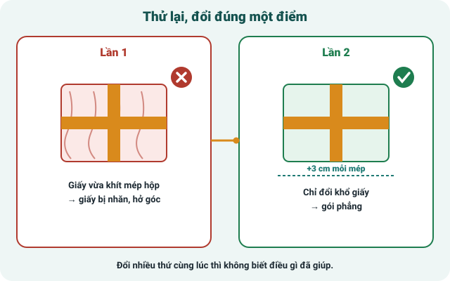

K6 · Thích ứng và bền bỉ › Bậc 1 Làm quen
Khi kế hoạch đổi: nói ra chỗ bối rối và tiếp tục làm
Bài này dạy cách làm việc khi có thay đổi. Phần tinh thần (giữ bình tĩnh, thiền, Stoicism) có ở tamhonkhoe.com. Bài Bậc 2 tiếp theo: Làm quen nhanh với công cụ, quy trình mới.
1. Mục tiêu
- Hỏi 2 câu để nắm việc khi kế hoạch đổi: giờ làm gì, việc cũ xử lý ra sao.
- Thử lại một việc chưa làm được, có đổi một điểm trong cách làm.
2. Khởi động truy xuất
- Ba bước khi bị vướng là gì?
- Loại việc nào phải hỏi ngay, không tự thử?
Đáp án
- Tự thử một lần; nói rõ chỗ vướng; nhờ đúng người, đúng lúc.
- Việc liên quan an toàn, tiền của khách, máy móc lạ.
Xem lại: Nói rõ chỗ mình vướng.
3. Giải thích
Ở nơi làm việc, kế hoạch đổi thường xuyên. Khách đến sớm. Hàng về trễ. Quản lý chuyển bạn sang quầy khác. Đây là chuyện bình thường, không phải lỗi của ai.
Người mới hay phản ứng theo hai cách chưa tốt. Một là đứng yên, chờ ai đó bảo. Hai là gật đầu cho qua dù chưa hiểu, rồi làm sai.
Khi kế hoạch đổi, hỏi 2 câu:
Hai câu hỏi khi kế hoạch đổi
- "Giờ em làm việc gì trước?"Để biết việc mới và thứ tự ưu tiên.
- "Việc em đang làm dở thì sao?"Để việc cũ không bị bỏ quên giữa chừng.
Nói ra chỗ bối rối là cách làm việc tốt, không phải yếu kém. Câu "Em chưa rõ, chị nói lại giúp em phần…" giúp bạn tránh làm sai.
Khi làm chưa được lần đầu. Làm hỏng lần đầu là chuyện bình thường với việc mới. Điều quan trọng là lần sau làm khác đi một điểm. Đừng lặp lại y nguyên cách cũ.
1. Xem chỗ nào chưa được 2. Đổi một điểm 3. Thử lại
Ví dụ: gói quà bị nhăn giấy. Lần sau đo giấy rộng hơn mép hộp 3 cm. Chỉ đổi một điểm thì bạn biết điểm đó có giúp hay không.
Nếu thử lại hai, ba lần vẫn chưa được, quay lại bài trước: nói rõ chỗ vướng và nhờ giúp.

4. Ví dụ tại nơi làm việc Việt Nam
Tình huống giả định. Quân làm thêm ở một quán phở. Quân đang rửa bát thì anh quản lý gọi: "Quân ra bưng phở phụ, khách đông quá."
Quân không đứng ngẩn ra. Quân hỏi nhanh:
"Dạ, em bưng bàn nào trước ạ? Chồng bát em đang rửa dở thì để đó hay nhờ ai ạ?"
Anh quản lý trả lời: bưng theo số phiếu, bát để chị Tư rửa tiếp. Quân lau tay rồi ra bưng phở.
Lần đầu bưng hai bát một lúc, Quân làm sánh nước. Lần sau, Quân dùng khay thay vì cầm tay.
Vì sao cách này tốt: Quân hỏi đủ 2 câu, không bỏ dở việc cũ. Khi làm chưa được, Quân đổi một điểm rồi thử lại.
5. Thực hành
Tình huống giả định. Bạn thực tập ở một văn phòng. Bạn đang nhập dữ liệu khảo sát. Chị hướng dẫn nhắn: "Em dừng việc nhập, chuẩn bị phòng họp cho khách lúc 10 giờ nhé."
Viết 2 câu hỏi bạn nhắn lại.
Gợi ý 1
Chuẩn bị phòng họp gồm những gì? Đó là "việc làm gì trước".
Gợi ý 2
Dữ liệu đang nhập dở: lưu lại và làm tiếp lúc nào?
Lời giải mẫu
"Dạ chị, phòng họp cần chuẩn bị những gì, mấy người ạ? Phần dữ liệu em lưu lại, họp xong em nhập tiếp được không chị?"
6. Tự kiểm tra
Chọn đáp án. Mỗi lựa chọn đều có giải thích.
Câu 1. Bạn đang xếp hàng lên kệ thì được gọi sang quầy thu ngân. Câu hỏi nào cần thiết nhất?
-
Chưa đúng. Câu này không giúp bạn nắm việc mới.
-
Đúng. Đúng. Hỏi về việc cũ giúp việc dở không bị bỏ quên.
-
Chưa đúng. Thùng hàng dở có thể nằm giữa lối đi hoặc bị quên.
Câu 2. Bạn chưa hiểu chỉ dẫn mới nhưng thấy quản lý đang vội. Bạn làm gì?
-
Chưa đúng. Tự đoán dễ làm sai, tốn thời gian hơn.
-
Đúng. Đúng. Nói ra chỗ bối rối một cách ngắn gọn giúp tránh làm sai.
-
Chưa đúng. Đứng yên làm chậm công việc. Hỏi ngắn ngay lúc đó tốt hơn.
Câu 3. Bạn gói quà lần đầu bị nhăn giấy. Cách thử lại nào tốt nhất?
-
Chưa đúng. Lặp lại cách cũ thường cho kết quả cũ.
-
Đúng. Đúng. Đổi một điểm giúp bạn biết điểm đó có tác dụng hay không.
-
Chưa đúng. Đổi nhiều thứ cùng lúc thì không biết điều gì giúp được.
Câu 4. Bạn đã thử lại 3 lần mà vẫn chưa làm được. Bước tiếp theo là gì?
-
Đúng. Đúng. Thử vài lần chưa được thì nên nhờ giúp, như bài trước.
-
Chưa đúng. Bỏ việc không giải quyết được vấn đề.
-
Chưa đúng. Loay hoay quá lâu làm mất thời gian. Nên nhờ giúp.
7. Phản tư
- Lần gần nhất kế hoạch đổi bất ngờ, bạn đã phản ứng thế nào?
- Lần đó, câu hỏi nào lẽ ra giúp bạn làm tốt hơn?
8. Áp dụng thật
Trong 7 ngày tới, khi có một thay đổi nhỏ trong việc học hoặc việc làm, hãy hỏi đủ 2 câu. Chọn một việc bạn làm chưa được, đổi một điểm rồi thử lại. Ghi kết quả vào nhật ký.
9. Siêu dữ liệu
| skill | K6 · Thích ứng và bền bỉ |
|---|---|
| level | Bậc 1 · Làm quen |
| group | N2 |
| framework_map | WEF: Resilience, flexibility and agility; SkillsFuture CCS: Adaptability; LifeComp: P2 Flexibility (chỉ dẫn chiếu) |
| updated | 2026-11-14 |
Hoàn thành bài
Đánh dấu đã học để site gợi ý lịch ôn sau 1, 3 và 7 ngày. Dữ liệu chỉ lưu trên máy của bạn.
Lịch ôn gợi ý: